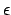
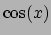
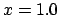
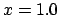
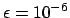

Next: 3.10 Script Watching: pyxplot_watch Up: 3. Extensions of Gnuplot's Previous: 3.8 Datafile Interpolation: Spline Contents Index
Special functions are available for performing numerical integration and differentiation of expressions: int_dx() and diff_dx(). In each case, the ``x'' may be replaced with any valid variable name, to integrate or differentiate with respect to any given variable.
The function int_dx() takes three parameters - firstly the
expression to be integrated, followed by the minimum and maximum integration
limits. For example, the following would plot the integral of the function
 :
:
plot int_dt(sin(t),0,x)
The function diff_dx() takes two parameters and an optional third -
firstly the expression to be differentiated, then the point at which the
differential should be evaluated, and then an optional parameter, .
The following example would evaluate the differential of the function 
with respect to  at :
at :
print diff_dx(cos(x), 1.0)
Differentials are evaluated by a simple differencing algorithm, and the parameter controls the spacing with which to perform the differencing operation:
By default, .
Advanced users may be interested to know that integration is performed using the quad function of the integrate package of the scipy numerical toolkit for Python - a general purpose integration routine.
Dominic Ford, 24 November 2006